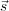
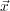
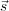
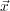
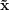
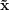
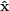

An ICA experiment using DCG Renaissance.
Daniel Beatty
2007-05-10
1
1 Introduction
The original assignment is
This project is to illustrate how a modified
Independent Component Analysis (ICA)
can be used to restore an image corrupted
with additive Gaussian noise.
Choose any natural image (of a reasonable
size), add 30% Gaussian noise to the image,
assuming a noisy image model:
Denoise the noisy image by using the Sparse
Code Shrinkage Method (closely related to
ICA) as described in the following in the
following reference.
Compare the restored image using the above
method with standard noise removal filters
such the simple median filter or the Wiener
filter.
MATLAB codes for various versions of
ICA are available from the home page of A
Hyvärien and the Laboratory of Computer and
Information Science at the University of
Helsinki.
In the absence of MATLAB, this paper is resorting
to using the implementation of the Fast ICA as
implemented in the IT++ libraries provided free of
charge under the GNU Public License. Furthermore, this
experiment uses a wrapper framework to IT++ called
Cocoa IT build especially for this project.
The key to Sparse Code Shrinkage using ICA is in the
summary provided in section 4 [?, 4]
- First, using a noise-free training set
of
 , use some sparse coding method
for determining the orthogonal matrix
W so that the components si in  =
W have as sparse distributions as
possible. Estimate a density model
pi(si) for each sparse component, using
the models in 3 and 5.
, use some sparse coding method
for determining the orthogonal matrix
W so that the components si in  =
W have as sparse distributions as
possible. Estimate a density model
pi(si) for each sparse component, using
the models in 3 and 5.
- Compute for each noisy observation
 (t)
of x the corresponding noisy sparse
components y(t) = W(t). Apply the
shrinkage non-linearity gi(⋅) as defined
in 4, or in 7, on each component yi(t),
for every observation index t. Denote
the obtained components by ŝi(t) =
gi(yi(t)).
(t)
of x the corresponding noisy sparse
components y(t) = W(t). Apply the
shrinkage non-linearity gi(⋅) as defined
in 4, or in 7, on each component yi(t),
for every observation index t. Denote
the obtained components by ŝi(t) =
gi(yi(t)).
- Invert the relation 2 to obtain
estimates of the noise-free x, given by
(t) = WT
 (t).
(t).
The equations referenced are supplied below:
An experiment to demonstrate these equations simply
takes an image, generates the W matrix. feeds in a noisy
version of the same image into gi. This is done following
the tutorials for Octave.
This same experiment is also done using Cocoa.
Admittedly, this implementation is far easier than the
one for PCA. One, no points of interest are being considered. Thus the GUI for this exercise is much
simpler. Also, Core Image filters can be directly
applied.
![s = Wx (2)
2
p(s) = C exp(- as ∕2- b[s]) (3)
g(u) = --1---sign(u)max(0, ∣u∣- bσ2) (4)
1+ σ2a
p(s) =-1(α∘-+-2)[α(α-+-1)∕2](α∕2+1) (5)
2d [ α(α + 1)∕2 + ∣s∕d∣]α+3
∣u∣- ad 1∘ ---------------------
g1(u) = (--2--- + 2 (∣u∣+ ad)2 - 4σ2(α+ 3)) (6)
( )
g(u) = max 0 (7)
sign(u)g1(u)](index8x.png)